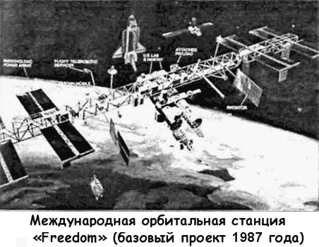
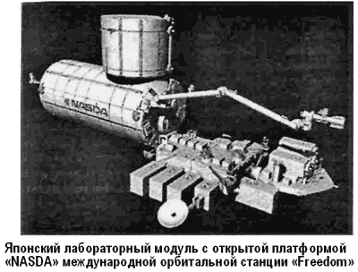
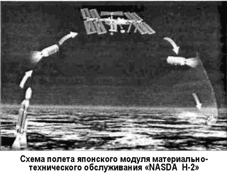

Орбитальная станция «Freedom»
He следует думать, будто бы НАСА при подготовке или после запуска «Скайлэб» отказалось от других перспективных проектов долговременной орбитальной станции.
Например, с начала 1970 года обсуждался проект огромной «Космической базы» («Space Base») на 50 человек со сроком эксплуатации в десять лет, состоящий из девяти модулей.
В перспективе эту базу планировалось расширить до «космического отеля», который мог бы вмещать 400 космических туристов.
Однако более реальным в то время представлялся проект «Фридом» («Freedom»), к участию в котором НАСА собиралось привлечь космические агентства других стран. Станция «Фридом» должна была заменить «Скайлэб» и стать основой новой космической программы США, нацеленной на реализацию Стратегической Оборонной Инициативы.
В июле 1984 года президент США Рональд Рейган заявил:
«Сегодня я предложил НАСА создать постоянно действующую обитаемую космическую станцию не более чем за десять лет!» Спустя восемь месяцев НАСА заключило восемь контрактов на проработку схемы общей компоновки, элементов и узлов будущей станции и приступило к переговорам о сотрудничестве с компаниями Японии, Канады и стран Западной Европы.
Первоначальная стоимость проекта оценивалась специалистами НАСА в 21 миллиард долларов с выплатой 14,5 миллиарда в течение первых пяти лет. Разумеется, подобные расходы вызвали ожесточенное сопротивление в Конгрессе. Компромисса удалось достигнуть только когда НАСА снизило расценки до 17,7 миллиарда долларов за проект с выплатой 12,2 миллиарда на первом этапе разработки.

В апреле 1987 года Рейган утвердил бюджет программы «Фридом».
В конце того же года НАСА выдало крупнейшим аэро-космическим фирмам задания на проектирование и изготовление элементов будущей станции. Так, компания «Рокетдайн» взялась за разработку бортовой энергетики, «Боинг» проектировал модули, «Макдоннелл-Дуглас» добился права на создание несущей конструкции, а также технологии ее сборки в космосе, «Дженерал Дайнэмикс» получил подряд на изготовление маневрирующего спутника, входящего в состав орбитального комплекса, и оборудования для технологического обслуживания всех его автономных систем.
Первый вариант станции представлял собой 122-метровую ферму, расположенную перпендикулярно поверхности Земли. Лабораторный и жилой блоки предполагалось разместить у нижнего конца, чтобы использовать возможность гравитационной стабилизации. Дело в том, что в этом случае станция будет держаться как поплавок, а при отклонении фермы от заданного положения возникнет момент силы, стремящийся вернуть ее в первоначальное положение. Заметим, без помощи двигателей ориентации.
Однако выяснилось, что такая компоновка не позволит «прицепить» к станции дополнительные блоки (изменится центр масс) и придется ограничить число намеченных экспериментов.
Поэтому пришлось отыскивать иной вариант компоновки.
По новому варианту компоновки основным несущим элементом станции «Фридом» стала бы 108-метровая горизонтальная ферма. На ее концах размещались панели солнечных батарей общей мощностью 75 кВт, а в центре — четыре блока. Два, лабораторный и жилой, должны были поставить компании США и по одному — Европейское космическое управление (блок «Columbus») и Япония (блок «NASDA»).

В первом блоке собирались проводить различные «микрогравитационные исследования»; второй отвели под жилье для астронавтов, разместив там же и комплекс управления положением и движением станции. Длина каждого блока — 13,6 метра, наружный диаметр — 4,45 метра и внутренний — 4,2 метра.
Европейский лабораторный блок состоит из четырех модулей, предназначенных для медико-биологических, материаловедческих, гидродинамических и других исследований.
У японского блока, аналогичного по назначению, предусмотрена открытая платформа. На нее через шлюз диаметром 1 метр перенесут оборудование для работ в открытом космосе. Все блоки будут соединены унифицированными туннелями-переходами.
Впервые в истории американской астронавтики было решено воспользоваться замкнутой системой жизнеобеспечения с регенерацией воды и кислорода. В этом случае транспортным кораблям снабжения нужно было на орбиту только пищу и азот.
Элементы несущей фермы планировалось доставляться на орбиту «Шаттлами», оснащенными выдвижными, дистанционно управляемыми манипуляторами. По мере сборки на готовых участках несущей фермы монтировалось различное оборудование. Работами в космосе смогли бы заниматься и астронавты, облаченные в специальные скафандры нового образца, снабженные автономным устройством ранцевого типа с двигателем малой тяги и системой жизнеобеспечения.
Вдали от «Шаттла» или от установленного на ферме блока работы можно производить с помощью маневрирующего модуля, оборудованного манипуляторами.
Предварительные опыты, проведенные американскими специалистами в воде, где имитировались условия невесомости, и в космосе, показали, что форменные конструкции предпочтительнее собирать на орбите из труб, формируя из них тетраэдры. Для фиксации трубы в крепежном цанговом узле достаточно слегка подать ее вперед и чуть повернуть.
Для транспортного снабжения станции «Фридом» американцы собирались использовать корабли «Спейс Шаттл», а сотрудничающие с ними японцы — модуль материальнотехнического обслуживания NASDA Н-2 массой 15 тонн, габариты которого жестко привязаны к размерам японской ракеты-носителя Н-2.
Станцию «Фридом» планировалось собрать за 10 или 11 запусков кораблей «Спейс Шаттл». Первый старт был назначен на март 1994 года, чтобы завершить сборку уже в марте 1997 года.

В первом рейсе на 385-километровую орбиту доставили бы трубы и узлы крепления несущих ферм, во втором и третьем — солнечные батареи, радиатор для сброса тепла, стыковочный узел и другое оборудование. В четвертом на несущей ферме поставили бы лабораторный блок, в пятом — опять солнечные батареи, в шестом — в лаборатории установили бы аппаратуру для экспериментов, намеченных на седьмой рейс, в девятом американцы смонтировали бы жилой блок и в одиннадцатом поселили бы в нем четырех человек.
На втором этапе строительства на орбите планировалось смонтировать две 105-метровые фермы, направленные перпендикулярно поверхности Земли, соединив их концы 45-метровыми перемычками. К серединам образовавшегося прямоугольника пристыковалась горизонтальная ферма, собранная на первом этапе работ.
Кроме обычных исследований, персоналу станции предстояло запускать автономные спутники, предназначенные для решения различных научных и технических задач.
Однако и этот проект не был реализован. НАСА катастрофически не хватало финансирования. Попытка же переложить большую часть расходов на зарубежных партнеров не увенчалась успехом. Кроме того, постоянно возникали споры по поводу статуса станции. Министерство обороны США требовало выделить площади на «Фридом» для размещения военного оборудования, однако это по понятной причине вызывало ожесточенное сопротивление со стороны европейцев и японцев.
Межправительственное соглашение по станции было подписано в сентябре 1988 года. Оно предусматривало следующее долевое участие космических агентств в строительстве станции: 46 % — США, 3 % — Канада, 51 % — Европа и Япония. После окончания строительства на «Фридом» постоянно должен был находиться экипаж из шести американских и двух «международных» астронавтов. Сначала предполагалось, что каждый астронавт пробудет на станции не более 90 дней, однако вскоре НАСА увеличило срок дежурства до 120 дней, чтобы снизить расходы на запуски «Шаттлов».
Несмотря на подписание соглашения, программа была приостановлена, поскольку в Америке начались выборы и требовалось удостовериться, что новый президент поддержит и саму программу, и космическую политику США в целом.
Президент Буш поддержал программу создания и развития станции «Фридом». Более того, в своей речи он назвал ее форпостом, откуда будут стартовать корабли к Луне (20012005 годы) и к Марсу (2025 год).
Однако прежде всего «Фридом» планировалось использовать как космический завод, способный, по теории, приносить прибыль. Когда Рейган утвердил программу строительства станции «Фридом», экономисты-оптимисты с расчетами на руках доказывали, что она быстро окупится и к 2000 году будет приносить в казну США 20 миллиардов долларов в год. Однако уже через два года, когда погиб «Челленджер», что значительно подняло стоимость запусков «Шаттлов», стало ясно: быстрой окупаемости не будет. К тому же из-за постоянных сокращений в финансировании НАСА пришлось отказаться от ряда специальных блоков, которые как раз и придавали станции статус научно-производственного центра.
Проект станции «Фридом» рухнул под собственной тяжестью в 1990 году. Выяснилось, что станцию необходимо перепроектировать, поскольку старый проект не удовлетворяет весовым требованиям, а сборка «Фридом» потребует гораздо большего числа выходов астронавтов в открытый космос, чем предполагалось вначале. Таким образом необходимо было дополнительное финансирование, но вместо новых денежных вливаний расходы на программу были сокращены.
НАСА попыталось спасти программу, предложив в марте 1991 года обновленный проект станции под названием «Фред» («Fred»).
Последовательность монтажа космической станции была резко упрощена, за счет чего удалось сократить число выходов астронавтов-монтажников в открытый космос. Один набор солнечных батарей был из проекта удален, сократив мощность электростанции с 75 до 56 кВт.
Пришлось отказаться и от ряда запланированных экспериментов, ограничившись медико-биологическими и микрогравитационными исследованиями.
Станция «Фред» была значительно меньше предшественницы.
Длина горизонтальной фермы осталась прежней, однако из проекта навсегда исчезли 105-метровые перпендикулярные фермы. До 8,2 метра уменьшилась длина основных блоков, за счет этого снизился обитаемый объем, а число астронавтов сократилось вдвое — до четырех человек.
Повторно спроектированный американский лабораторный блок содержал только 15 стоек научного оборудования, что вызвало сильнейшее недовольство со стороны ученых. Из состава оборудования пришлось вывести центрифугу, что также снизило научную ценность блока.
Первый запуск был теперь намечен на ноябрь 1995 года, а монтаж должен был завершиться в сентябре 1999 года после 17 полетов кораблей «Спейс Шаттл».
Однако даже с учетом этих изменений, ставящих под сомнение сам смысл существования станции, общие расходы на строительство удалось снизить только до 16,9 миллиарда долларов, что, по мнению американского Конгресса, было слишком дорого.
Проект международной орбитальной станции, скорее всего, так и не был бы реализован в обозримом будущем, если бы окончание Холодной войны не привело к тому, что к проекту создания такой подключилась Российская Федерация.
Огромный задел по созданию и эксплуатации долговременных орбитальных станций, накопленный еще в советские времена, позволил не только снизить текущие расходы, но и заметно ускорить саму программу, которая со временем стала называться программой «МКС» — «Международная космическая станция» или «International Space Station».